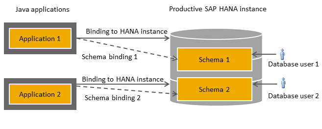

Binding SAP HANA Databases to Java Applications
Java applications deployed on the SAP Cloud Platform can be assigned one or more database schemas. For developing Java applications on productive SAP HANA databases, custom logons allow you to control which schemas an application is able to access.
Prerequisites
- You have installed the required tools. See Installing SAP HANA Tools for Eclipse.
- You have connected to the productive SAP HANA database from Eclipse. See Connecting to SAP HANA Databases via the Eclipse IDE.
- You have set up the console client. See Setting Up the Console Client.
-
You have created a database user that you use to access the database. See Creating a Database Administrator User.
Context
Productive SAP HANA databases are designed for developing with SAP HANA in a productive environment and provide you with a database reserved for your exclusive use. When you bind Java applications to a productive SAP HANA database, you specify a custom logon, which consists of an SAP HANA database user, in effect the relevant schema owner, and a password. The database user is then used by the application to access the SAP HANA database. Since a database user is by default associated with a schema of the same name, the application will also by default use this schema, as shown below:

To use a custom logon, complete the following steps:
- Create an SAP HANA database user. You can use Eclipse (as described below) or the SAP HANA Web-based Development Workbench.
- Bind the HANA database to the Java application using the new database user. You can use the cockpit or console client.
Create an SAP HANA Database User
Procedure
-
In the Systems view, choose
 Security
Security  Users
Users  .
.
Bind the HANA Database to the Java Application (Cockpit)
In the cockpit, you can create bindings at both the account and application level, that is, by HANA database or by Java application.
Procedure
- Log on to the cockpit and select an account.
-
Choose one of the following options:
To create bindings... Do the following By HANA database
-
In the navigation area, choose one of the following:
-
Persistence Database Systems : In the list, select the relevant
database system. Choose
Databases in the navigation
area at the database system level. In the list,
select the relevant SAP HANA database.
-
Persistence Databases & Schemas : In the list, select the relevant
SAP HANA database.
Note For productive SAP HANA databases, the ID is identical to the database system name. -
-
Choose Data Source Bindings in the navigation area.
The overview lists all Java applications that the specified SAP HANA database is currently bound to, including the custom logon used in each case.
-
Choose the New Binding button.
-
In the New Binding dialog box, enter a data source name and the name of the application that you want the productive HANA database to be bound to.
Note-
The specified application must be deployed in the selected account.
-
To create a binding to the default data source, enter the data source name <DEFAULT>.
-
-
Enter the custom logon details:
-
Database user: The applicable schema owner in the SAP HANA system.
-
Password: The specified database user’s password.
CautionThe initial password of this database user needs to be changed before binding the application to an SAP HANA database, since the application will otherwise throw an exception.
-
-
Select the checkbox Verify credentials to verify the validity of the custom logon data.
-
Save your entries.
By Java application
-
Choose
Applications Java Applications in the navigation area and select the
relevant application in the application list. -
Choose
Configuration Data Source Bindings in the navigation area.The overview lists all applications that the selected application is currently bound to. Note that when an application is bound to a productive SAP HANA database, the database ID is identical to the database name.
-
Choose the New Binding button.
-
Enter a data source name.
-
In the Database ID field, enter the productive SAP HANA database to which the application should be bound.
-
Enter the custom logon details:
-
Database user: The applicable schema owner in the SAP HANA system.
-
Password: The specified database user’s password.
CautionThe initial password of this database user needs to be changed before binding the application to an SAP HANA database, since the application will otherwise throw an exception.
-
-
Select the checkbox Verify credentials to verify the validity of the custom logon data.
-
Save your entries.
-
Next Steps
An application’s state influences when a newly bound SAP HANA database becomes effective. If an application is already running (Started state), it will not have access to the newly bound HANA database until it has been restarted.